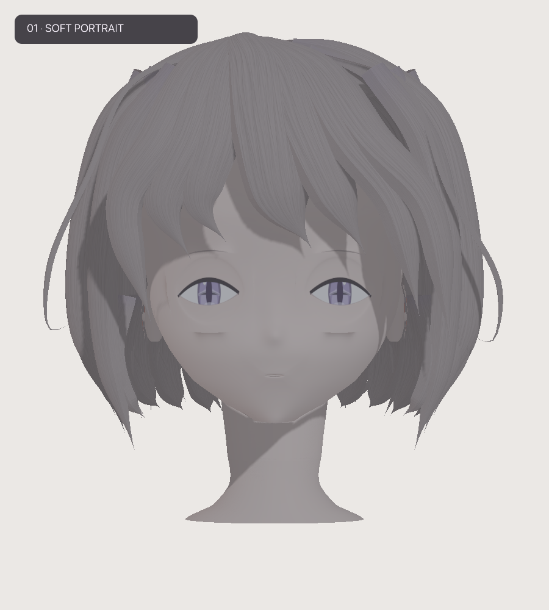
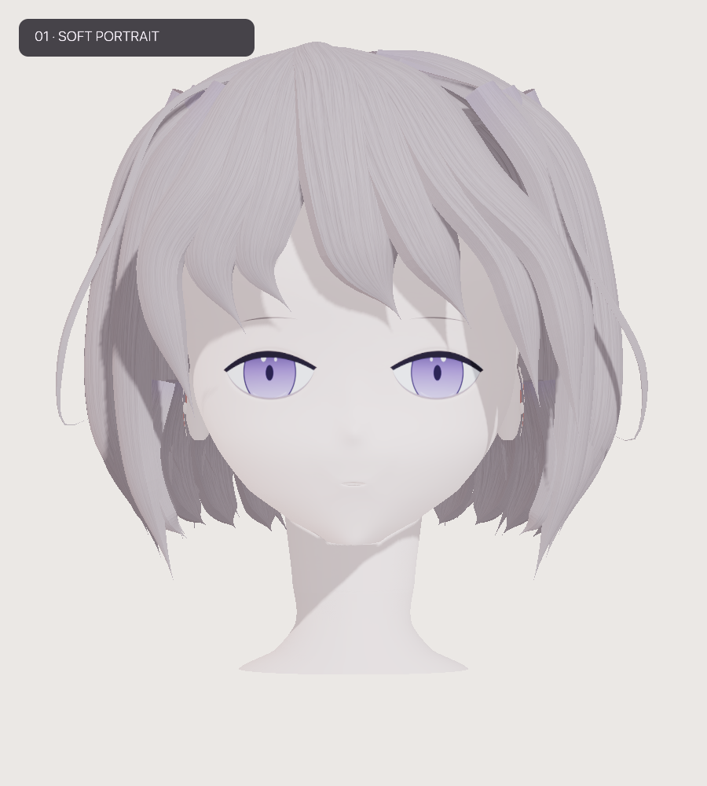
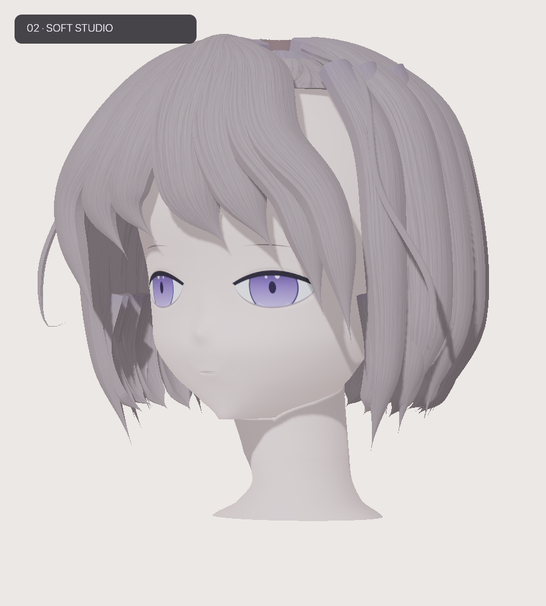
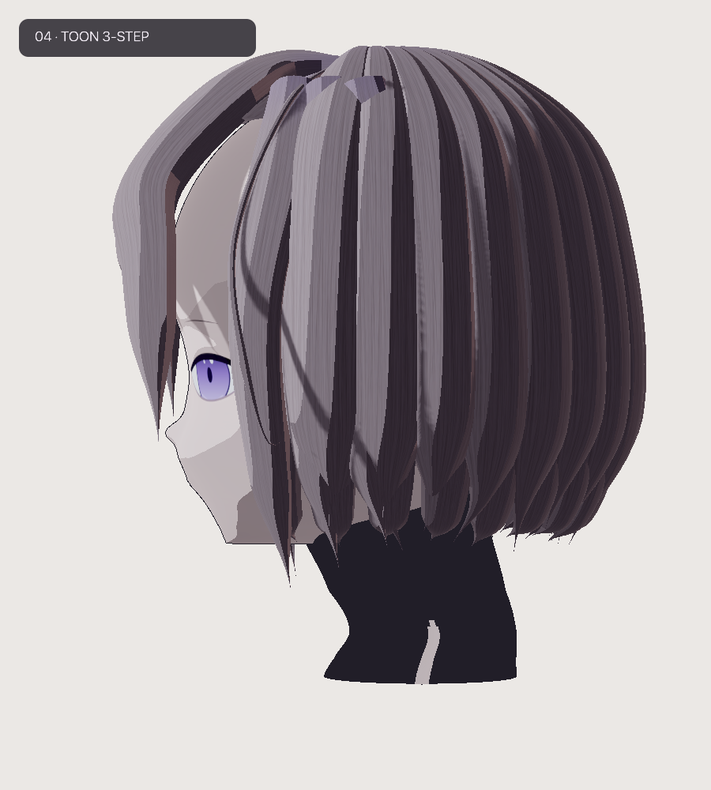

S86 — Face comparison
Same front camera. Left: supplied previous result. Right: current DSL. Eye surfaces now follow the authored head profile; iris proportions and portrait lighting have changed.

Before
AfterAngle checks
Existing timeline styles are retained: frame 100 uses Soft Studio; frame 180 uses Toon 3-Step. These views check attachment, not identical lighting.

Frame 100 — 30°
Frame 180 — 90°